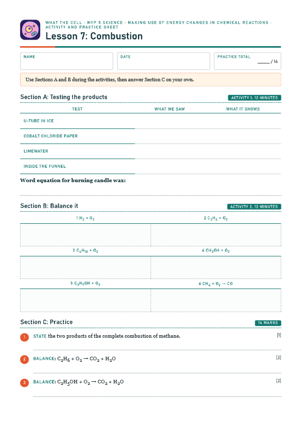

By the end of the lesson you can
- State the products of complete combustion
- Write balanced equations for burning fuels
- Compare complete and incomplete combustion
- Explain why carbon monoxide is dangerous
Keys: arrows or a presentation clicker move the slides, F for full screen. Slides with a red dot have a video or simulation.
Videos (all 5 minutes or less)
- 3:56
Combustion and incomplete combustion
FuseSchool. The products of complete and incomplete combustion and why it matters. Slide 8.
Simulations
- PhET
Balancing Chemical Equations
PhET, University of Colorado Boulder. Balance the combustion of methane, then play the game.
- Lab
Energy Changes Lab: fuel calorimetry
What the Cell. Turn the air supply down and see the flame turn yellow and sooty.
Print and practise

Activity and practice sheet
Used in the lesson’s activities, with practice questions. Your teacher has the answers.
Download (PDF)Lesson 7 slides
All 23 slides in one file, to read again or print. The video buttons on the slides open YouTube.
Download the slides (PDF)Revising? The Revision tab on the unit page has the unit notes and review.
Class activity pack
Everything to print for the lesson’s activities: picture cards, sorting mats, station cards with their kit lists, and the teacher’s set-up notes. Print it before class.
Download the activity pack (PDF)Notes: Combustion
Combustion
Combustion is a fuel reacting with oxygen, releasing energy as heat and light. It is exothermic. A fire needs fuel, oxygen and heat (the fire triangle): remove one and it goes out.
Complete combustion
With plenty of oxygen, a hydrocarbon burns to carbon dioxide and water: CH4 + 2O2 → CO2 + 2H2O. The flame is blue and hot, and the most energy is released.
Balancing
Balance carbon first, then hydrogen, then oxygen last. Only change the numbers in front. If you need an odd number of oxygen atoms, double everything: 2C4H10 + 13O2 → 8CO2 + 10H2O.
Incomplete combustion
With too little oxygen, carbon monoxide and soot (carbon) form as well as water. The flame is yellow and smoky and less energy is released.
Carbon monoxide
CO binds to haemoglobin so the blood carries less oxygen. It has no colour or smell. Never use a charcoal stove or generator indoors; keep vents clear; fit a CO detector.
Alcohols and the environment
Ethanol (C2H5OH) burns cleanly: C2H5OH + 3O2 → 2CO2 + 3H2O. Burning fuels releases carbon dioxide (climate change), soot, sulfur dioxide and nitrogen oxides (acid rain and smog). Limewater turns milky with carbon dioxide.
Key words
| combustion | a fuel reacting with oxygen, releasing energy; exothermic |
|---|---|
| hydrocarbon | a compound of hydrogen and carbon only |
| complete combustion | enough oxygen: products are carbon dioxide and water |
| incomplete combustion | too little oxygen: carbon monoxide and soot form |
| carbon monoxide | a toxic gas with no colour or smell; stops blood carrying oxygen |
| limewater | turns milky with carbon dioxide |
| biofuel | a fuel made from plants, such as ethanol |